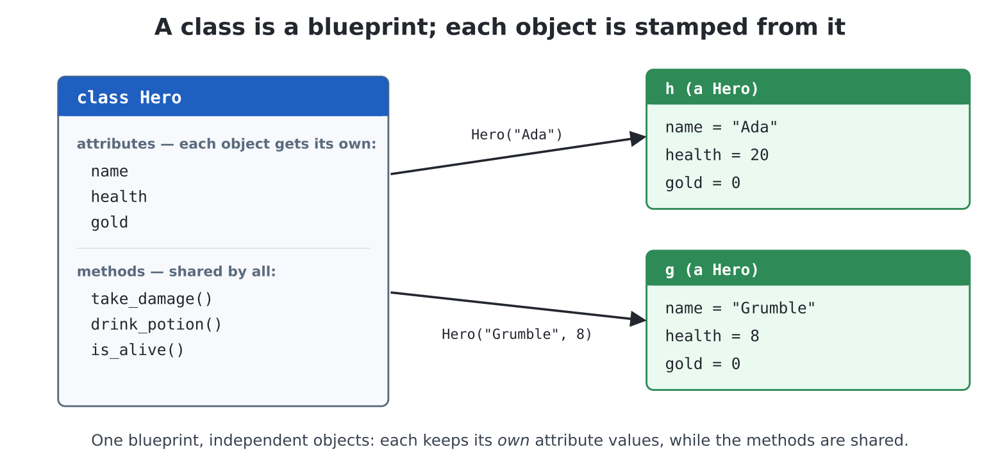

Chapter 9 let you in on the pattern: things you make, then
instruct through the dot — t = Turtle(),
t.forward(100). Since then you have made files, lists and
dictionaries dance the same way. One power is missing, and it is the
last one Part II has to give: making your own kinds of thing.
That is the class, and with it the toolbox closes:
everything in Parts III to VI is built from what you will know by
tonight.
A promise before the roadmap, because this topic has a reputation: object-oriented programming as taught in big books is a cathedral of jargon. You need the cottage version — enough to build game characters, bank accounts and gadgets, and to use the machine’s own modules fluently — and the cottage version is genuinely small:
__init__ says how a new one is set up;
self is “the one being worked on”.Suppose your game (Part IV is coming) needs a hero: a name, some health, some gold. Chapter 6 says three variables — but the villain needs three too, and every goblin after that. Chapter 10 says a dictionary per character — better, and honestly workable:
hero = {"name": "Ada", "health": 20, "gold": 0}But now the behaviour — taking damage, drinking potions — lives in loose functions scattered somewhere else, each hoping it gets handed the right shape of dictionary, none able to promise a character is ever set up correctly. The data is in one place, the rules about the data in another, and nothing binds them.
A class is exactly that binding: the data and its behaviour, one parcel, stamped from one blueprint.
Coming from MMBasic: if you know recent MMBasics, a class is a structure plus its SUBs, in one parcel — the fields and the code that works on them, packaged so they cannot drift apart. If you know C: a struct whose functions moved in.
edit("hero.py"):
class Hero:
def __init__(self, name, health=20):
self.name = name
self.health = health
self.gold = 0
h = Hero("Ada")
g = Hero("Grumble the Goblin", health=8)
print(h.name, h.health, h.gold)
print(g.name, g.health, g.gold)Run it: Ada 20 0, then
Grumble the Goblin 8 0. Now the tour, line by line, because
every piece of new syntax in this chapter is in these six lines:
class Hero: starts a blueprint
(capitalised names for classes is the convention — it is why
Turtle and Pin look the way they do).
Everything indented under it belongs to the blueprint.
def __init__(self, name, health=20): is
a method — a function living in the class — with a reserved name. When
you write Hero("Ada"), Python manufactures a blank object
and immediately calls __init__ on it to set it up. The name
is short for initialise; the double underscores mark it as one
of Python’s appointed hooks (more of them later). Note it is an ordinary
function underneath: parameters, defaults — chapter 11 applies in
full.
self is the newly made object itself,
handed to the method automatically as its first parameter.
self.name = name therefore means: on this particular
object, make an attribute name, holding the parameter
name. Attributes are variables that
live on an object — reachable from outside as h.name, from
inside methods as self.name, and each object carries its
own set.
That last point is the one to feel: h and g
came from one blueprint but are independent — two
character sheets, separately filled in. h.gold += 5
enriches Ada alone. (You met this with turtles without remarking on it:
two Turtle()s wander separately.)
In one line: class is the blueprint,
ClassName(...) stamps out an object, __init__
fills in its attributes, and every object has its own.

Attributes made the parcel; methods make it smart. Grow the class:
class Hero:
def __init__(self, name, health=20):
self.name = name
self.health = health
self.gold = 0
def take_damage(self, amount):
self.health -= amount
if self.health <= 0:
self.health = 0
print(f"{self.name} has been defeated!")
def drink_potion(self):
self.health += 10
print(f"{self.name} feels much better.")
def is_alive(self):
return self.health > 0Call them through the dot, exactly as you always have:
h = Hero("Ada")
h.take_damage(7)
h.drink_potion()
print(h.is_alive(), h.health)Notice nobody passes self at the call —
h.take_damage(7) fills self with
h automatically, the thing before the dot. That is
the whole mechanism behind every method you have ever called:
t.forward (100) was self-is-t all
along; "milk".upper() was self-is-
"milk". The dot is not new; today it just stopped being
someone else’s trick.
Look too at what moved inside: the “no negative health” rule
lives in take_damage, so no code anywhere can half-apply
it. When a rule about the data lives with the data, it is enforced
everywhere at once — chapter 13’s guard philosophy, given a permanent
home. (And yes — methods can raise ValueError on nonsense
arguments; the bank will, shortly.)
In one line: methods are the parcel’s own functions;
self arrives automatically as the thing before the
dot.
print(h) —
teaching your object to speakPrint an object and you get something like
<Hero object at 20003a10> — true but unhelpful.
Another appointed hook fixes it: give the class a __str__
method returning a string, and print (and f-strings) will
use it:
def __str__(self):
return f"{self.name}: {self.health} HP, {self.gold} gold">>> print(h)
Ada: 23 HP, 0 goldOne heads-up before you discover it yourself: the prompt’s
echo is not print. Type h bare at the
>>> and you still get the
<Hero object at ...> form — as you will when printing
a whole list of heroes at once. The echo speaks to programmers
through a second, stricter hook called __repr__; when the
raw form starts to annoy you, appendix I shows the one-method cure. For
now, print(h) — and printing list items in a loop — is all
the eloquence the chapter needs.
Two hooks in one chapter (__init__,
__str__) is the pattern worth seeing: the double-underscore
names are how your class plugs into Python’s own machinery — how making,
printing, even + and == can be taught to your
kinds of thing (appendix I shows how, when you want it).
Chapter 10 meets chapter 14, and this is where classes stop being ceremony and start being power:
party = [Hero("Ada"), Hero("Grace", 25), Hero("Alan", 15)]
for member in party:
member.take_damage(6)
for member in party:
print(member)A list of objects, marching under one loop. Every game in Part IV is this shape — a list of sprites, each asked to update itself; the GUI in chapter 27 is a list of controls, each asked to draw itself. You now read those sentences fluently.
The Hero class plus everything since chapter 6, as a tiny battle.
edit("duel.py"):
import random
class Hero:
def __init__(self, name, health=20):
self.name = name
self.health = health
def take_damage(self, amount):
self.health -= amount
if self.health < 0:
self.health = 0
def is_alive(self):
return self.health > 0
def __str__(self):
return f"{self.name:20} {'#' * self.health}"
ada = Hero("Ada the Adequate")
grumble = Hero("Grumble the Goblin", 16)
print("A DUEL COMMENCES\n")
fighters = [ada, grumble]
while ada.is_alive() and grumble.is_alive():
attacker, defender = fighters
blow = random.randint(1, 6)
defender.take_damage(blow)
print(f"{attacker.name} strikes for {blow}!")
print(defender)
fighters = [defender, attacker] # your turn now
winner = ada if ada.is_alive() else grumble
print(f"\n{winner.name} is victorious!")A health bar drawn with chapter 3’s string-repeat, turns swapped with
a two-element list, and the whole state of the battle living in two
objects. (That last line’s x if c else y is an
if folded into an expression — appendix E has it; read it
aloud and it explains itself.) Add potions, gold, a third fighter — the
class absorbs features without the program tangling, which is the entire
sales pitch.
The same machinery in serious clothing — and chapter 13’s
raise finding its natural home.
edit("bank.py"):
class Account:
def __init__(self, owner, balance=0):
self.owner = owner
self.balance = balance
def deposit(self, amount):
if amount <= 0:
raise ValueError("deposits must be positive")
self.balance += amount
def withdraw(self, amount):
if amount <= 0:
raise ValueError("withdrawals must be positive")
if amount > self.balance:
raise ValueError(f"only {self.balance} available")
self.balance -= amount
def __str__(self):
return f"{self.owner}: {self.balance} credits"Because every route to the balance passes through guarded
methods, an Account cannot go overdrawn or record a
negative deposit — not by bug, not by typo, not ever. Try to break it at
the prompt (import bank, make one, attack it). This is what
“the rules live with the data” buys, and it is why the modules you will
use in Part III can hand you objects and trust you with them.
Pull back. Turtle — a class in the firmware,
reset and forward its methods, x,
y and heading its attributes.
Pin("LED", Pin.OUT) — a class. Strings, lists,
dictionaries, files — classes, whose methods filled chapter 12’s
workbench. Even the exceptions of chapter 13 are classes (which is what
except ValueError is naming). You have been fluent in
using objects for five chapters; what this chapter added is the
maker’s side of the counter. When Part III hands you sprites, clocks and
GUI buttons, you will know exactly what you are holding: parcels of data
and behaviour, stamped from blueprints, yours to command through the dot
— and, where useful, yours to build.
(That is deliberately where the course stops with class machinery — nothing on this machine requires more of you, and the cottage version you now own is the version working programmers use daily. When curiosity or somebody else’s code demands the rest — inheritance, operator hooks, properties and their kin — appendix I is the guided tour, every example tested on this firmware.)
class Name: — a blueprint; calling
Name(...) stamps out independent objects.__init__(self, ...) sets a new object
up; self is always the object being worked
on — filled automatically at every call with the thing before the
dot.self.name,
h.name) are per-object variables; methods
are the parcel’s functions, and rules that live in methods are enforced
everywhere at once.__str__ teaches print
your object’s language — one of the double-underscore hooks into
Python’s machinery.Hero a gold attribute back, plus
loot(amount) — and make take_damage return
True if the blow was fatal, so the duel can award the
winner the loser’s gold in one tidy line.Turtle()s at once: make a and
b, walk them apart with different pens, and check
a.position() and b.position() really are
separate. Independence, seen.Hero.__init__ raise
ValueError for health <= 0, then try to
create a dead hero. Where does the traceback point — the class, or the
caller? Why is that the right place?transfer(source, destination, amount) — a plain
function moving credits between two Accounts using only
their methods. What happens to the destination if the source hasn’t
enough? Check — then make sure the answer is “nothing at all” (order
matters).__str__ to your handy.py’s… no — trick
question: handy holds functions, not a class.
Should it be one? (Genuinely arguable either way — deciding is
the skill. A rule of thumb: no data worth bundling, no class
needed.)Pet class:
hunger and boredom creep up each time a
tick() method is called; feed() and
play() push them down; __str__ prints a mood
based on the numbers. Wrap it in a while loop with a
command prompt and you have built a Tamagotchi. Beeps mandatory.Die class
(sides, roll()), then a bag of mixed dice in a
list — [Die(6), Die(6), Die(20)] — rolled with one loop.
Now the dojo, the duel and every board game you ever automate share one
component.scorelib, the class. Rebuild chapter
12’s library as a ScoreTable class taking its
filename in __init__ — so
ScoreTable("/breakout.csv") and
ScoreTable("/quiz.csv") are separate tables with the same
behaviour. This is the real answer to “why not just functions?”:
functions shared one file; objects each bring their own.Account with a
transaction history (a list attribute of
(kind, amount) tuples — chapter 10), a
statement() method that prints it, and an end-of-chapter
boss fight: make withdraw append to history only when
it succeeds. Chapter 13’s test standard applies: if you can’t break
it, ship it.